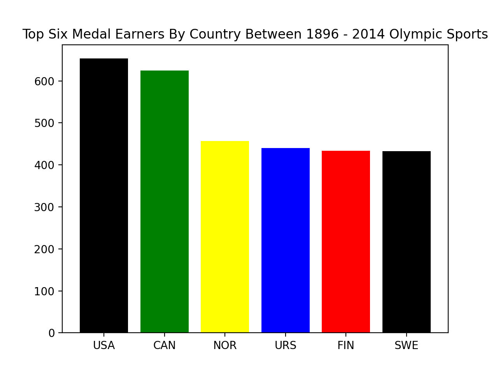
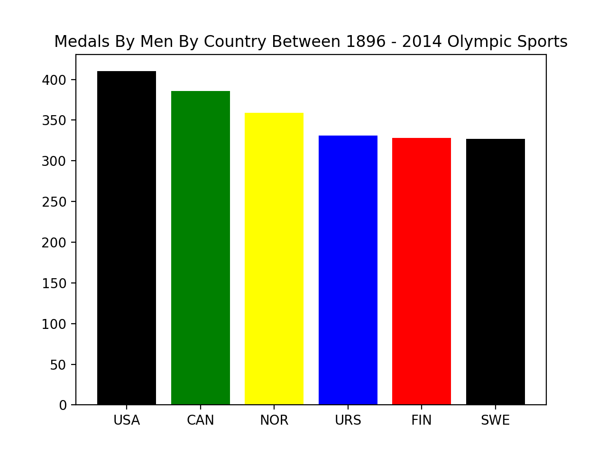
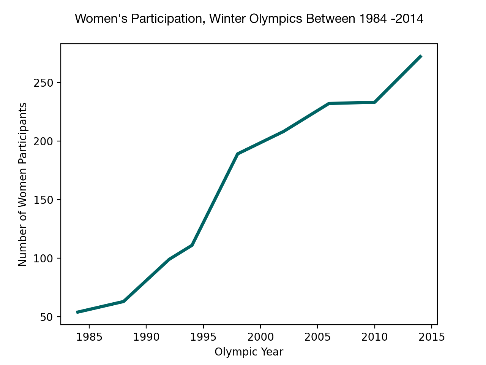

DATA ANALYSIS
The data below focus on key trends in the Winter Olympics between 1924 to 2014. There is particular focus on trends among the top medal earners and gender relations with further analysis between Canada and Canada who are also two (2) of the top medal earners in the Winter Olympics.
Data Point 1
Top 6 Medal Earners in the Winter Olympics
Data Point 2
Top Medal Earners by Country for Men
sksksksksksl,sslslslsllslslslslls
Data Point 3
Women's Participation in Winter Olympics 1984-2014
hshshshshhshshshshshhshshshs
